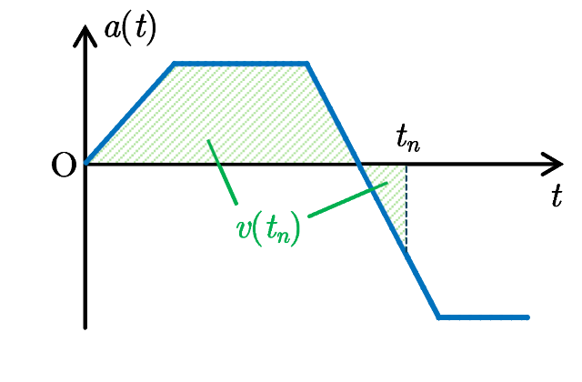
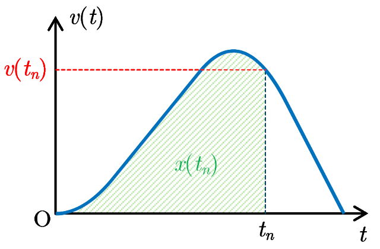
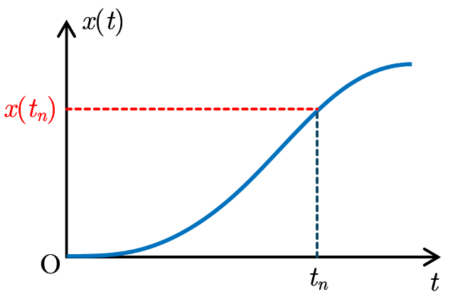
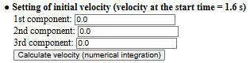
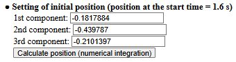

■ Analysis flow
The acceleration data analysis in this application uses numerical integration to obtain velocity data from the measured acceleration data, position data from the velocity data, and visualize these data in a graph. The flow of the analysis is as follows (click on the line starting with ▶ to see the explanation).
About numerical integration

$v$-$t$ graph

$x$-$t$ graph

When the position of an object moving on the $x$ axis (one-dimensional motion) is expressed as a function of time $t$ in the form $x=x(t)$, the velocity $v$ of the object is obtained as a function of time $t$ by differentiating the position $x(t)$ with time $t$, $$v(t)=\frac{dx}{dt}.$$ Furthermore, the acceleration of the object is obtained as a function of time $t$ by differentiating the velocity $v(t)$ with time $t$, $$a(t)=\frac{dv}{dt}.$$ Thus, conversely, if the acceleration $a$ is already obtained, the velocity $v(t_n)$ at time $t_n$ can be obtained by integrating the acceleration $a$ from $t=0$ to $t=t_n$ as, $$v(t_n)=\int_{0}^{t_n}\!\!a(t)\,dt+v_0,$$ where $v_0$ indicates the initial velocity at $t=0$. Similarly, the position $x(t_n)$ at time $t_n$ can be obtained by integrating the velocity $v$ from $t=0$ to $t=t_n$ as, $$x(t_n)=\int_{0}^{t_n}\!\!v(t)\,dt+x_0,$$ where $x_0$ is the initial position at $t=0$. The definite integral of the acceleration $a$ represents the net signed area between the curve of the acceleration $a$ and the $t$ axis over the interval $[0,\,t_n]$ in the $a$-$t$ graph. Here, the net signed area means the total area above the $t$ axis minus the total area blow the $t$ axis. Thus, the velocity is obtained by calculating the net signed area between the acceleration curve and $t$ axis, and the position is obtained by calculating the net signed area between the velocity curve and $t$ axis. The trapezoidal rule for numerical integration is used to determine these areas.
[Trapezoidal rule for numerical integration]
Read acceleration data
When you open this application, the file upload screen will appear as shown below. Click the "Choose File" button to upload a CSV file containing acceleration data. If the first row of the CSV file contains labels representing the data in each column, check the box labeled "Labels in the first row".

Note that when this application is opened with the “Analyze data" button of Acceleration Measurement App, the measured acceleration data is already loaded.
When a CSV file is loaded, the CSV data is displayed in a table as shown in the figure below. As an example, the table shows acceleration data for projectile motion measured using Acceleration Measurement App. If necessary, set the units for length and time used in the numerical data. Additionally, clicking the "▶ Graph marker and line settings" row allows you to change the marker/line mode and size settings for plotting the data later (Settings).

Next, select the time column and acceleration column(s) from the loaded data displayed in the table. You can select multiple acceleration columns, with a maximum of three columns (assumed to correspond to the x, y, and z components of acceleration). To select multiple acceleration columns on a PC, hold down the Shift or Ctrl key while clicking the desired items, then click the "Confirm" button while keeping them selected. On a smartphone or tablet, check multiple items and press the "Confirm" button. If you change the time column after selecting acceleration columns, you will need to reselect the acceleration columns. Once the time and acceleration columns are selected and the "Confirm" button is pressed, a graph of the selected acceleration data with time as the horizontal axis is displayed below. In this figure, the x, y, and z components of acceleration (awx[m/s^2], awy[m/s^2], awz[m/s^2]) in the stationary coordinate system obtained by Acceleration Measurement App are selected.
As seen from the graph, the object (smartphone) is in projectile motion in the time range from 3.37 s to 4.46 s, because the x and y components of acceleration (horizontal components) are nearly zero, and only the z component (vertical component) has a nonzero value (approximately -9.8 m/s2 directed downward). The abrupt changes in acceleration before and after this period are due to the force applied when throwing the smartphone and the impact when catching it.
Next, set the time domain (range for numerical integration) to be used for analysis. Review the displayed acceleration graph, select the start and end times for the acceleration data to be analyzed, and press the "Select" button. After pressing the "Select" button, a graph of the acceleration data within the specified time domain is displayed (if multiple accelerations are selected, graphs for each component are displayed). Clicking the "▶ Acceleration data" button just above the graph shows a table of acceleration data for the specified time domain (clicking it again closes the table).

If necessary, perform zero adjustment of the acceleration data (shifting all acceleration data to align to zero) or smoothing of the data (using Fourier transformation or least-squares approximation for smoothing).
Calculate velocity data from acceleration data

To derive velocity data from acceleration data through numerical integration, set the initial velocity (the velocity at the start time of the specified time domain for analysis) for each component. Unless you have some device that measures velocity, the initial velocity is generally unknown beforehand. For easier analysis, start measuring acceleration data from a stationary state and set the initial velocity to zero. In this case, leave all initial velocity components as 0.0 and press the "Calculate velocity (numerical integration)" button.
Pressing the "Calculate velocity (numerical integration)" button numerically integrates the acceleration data using the set initial velocity to obtain velocity data, and the velocity graph is displayed (if multiple accelerations are selected, graphs for each component are displayed). Clicking the "▶ Velocity data" button just above the graph shows a table of velocity data for the specified time domain (clicking it again closes the table).
If necessary, perform zero adjustment of the velocity data (shifting all velocity data to align to zero) or smoothing of the data (using Fourier transformation or least-squares approximation for smoothing).
Calculate position data from velocity data

To derive position data from velocity data through numerical integration, set the initial position (the position at the start time of the specified time domain for analysis) for each component. In the figure, the initial position is set so that the origin corresponds to the moment the smartphone is thrown (t = 3.37 s). After setting the initial position, pressing the "Calculate position (numerical integration)" button numerically integrates the velocity data to obtain position data, and the position graph is displayed (if multiple accelerations are selected, graphs for each component are displayed). Clicking the "▶ Position data" button just above the graph shows a table of position data for the specified time domain (clicking it again closes the table).
If necessary, perform zero adjustment of the position data (shifting all position data to align to zero) or smoothing of the data (using Fourier transformation or least-squares approximation for smoothing).
Output the data of acceleration, velocity and position
Once position data is obtained through numerical integration, press the "Output" button on the right end of the "Acceleration, Velocity, and Position data output" row to display the tables and graphs of acceleration, velocity, and position data together. These data can be downloaded as a CSV file by pressing the "Download" button after data output.

Plot trajectory using position data
After outputting acceleration, velocity, and position data, you can plot the motion trajectory. Select the time domain (start and end times) for plotting the trajectory and press the "Select" button to display the trajectory for the selected start and end times. If two components of acceleration are selected, the trajectory is plotted in two dimensions (on a plane). If three components are selected, the trajectory is plotted in three dimensions (in space). Note that if only one component of acceleration is selected, the trajectory cannot be displayed.
Pressing the "Start" button below the trajectory plot animates the motion along the trajectory. You can adjust the animation speed using the slider to the right of the "Start" button. The blue arrow and green arrow originating from the moving point represent the velocity vector and acceleration vector, respectively, visualizing the time variation of velocity and acceleration during motion. You can toggle the display of these vectors on and off using the "Velocity vector" and "Acceleration vector" checkboxes located below the "Start" button. Additionally, the length of these vectors can be adjusted using the slider.